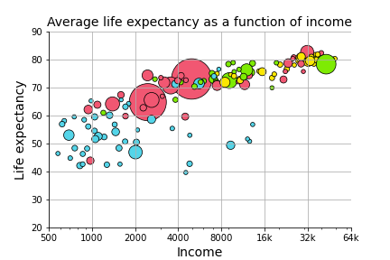

Lecture 16 (5/2/2022)¶
Announcements
Last time we covered:
Linear regression
Simple linear regression
Evaluating regression
Polynomial and multiple regression
Today’s agenda:
Multiple regression continued
Overfitting
import numpy as np
import pandas as pd
import matplotlib.pyplot as plt
import seaborn as sns
Multiple Regression¶
Big idea: multiple predictors for \(y\)¶
In real-world scenarios, it’s common to explore the relationship between multiple predictor variables that all jointly impact the dependent variable.
For this, we need multiple regression.
Though the guiding principles are similar to simple regression, things can get much more complicated in multiple dimensions. Here, we’ll provide enough of an overview for you to be able to use multiple regression as part of your modeling toolbox.
Example: predicting life expectancy¶
Let’s start with a familiar example.
In Problem Set 3 and elsewhere, we’ve looked at the gapminder dataset, which explores the relationship between GDP, population, and life expectancy at the national level and over time.
Here, we’ll just look at these variables for the most recent year (2007).
gap = pd.read_csv("https://raw.githubusercontent.com/UCSD-CSS-002/ucsd-css-002.github.io/master/datasets/gapminder.csv")
# Let's keep just some of the variables (note for pset!)
# NOTE: we're also just restricting ourselves to 2007
gap_subset = gap.loc[gap['year'] == 2007, ('country', 'year', 'lifeExp', 'pop', 'gdpPercap')].reset_index(drop = True)
# Add log transformed population and income
gap_subset['logPop'] = np.log10(gap_subset['pop'])
gap_subset['logGdpPercap'] = np.log10(gap_subset['gdpPercap'])
gap_subset
| country | year | lifeExp | pop | gdpPercap | logPop | logGdpPercap | |
|---|---|---|---|---|---|---|---|
| 0 | Afghanistan | 2007 | 43.828 | 31889923 | 974.580338 | 7.503653 | 2.988818 |
| 1 | Albania | 2007 | 76.423 | 3600523 | 5937.029526 | 6.556366 | 3.773569 |
| 2 | Algeria | 2007 | 72.301 | 33333216 | 6223.367465 | 7.522877 | 3.794025 |
| 3 | Angola | 2007 | 42.731 | 12420476 | 4797.231267 | 7.094138 | 3.680991 |
| 4 | Argentina | 2007 | 75.320 | 40301927 | 12779.379640 | 7.605326 | 4.106510 |
| ... | ... | ... | ... | ... | ... | ... | ... |
| 137 | Vietnam | 2007 | 74.249 | 85262356 | 2441.576404 | 7.930757 | 3.387670 |
| 138 | West Bank and Gaza | 2007 | 73.422 | 4018332 | 3025.349798 | 6.604046 | 3.480776 |
| 139 | Yemen, Rep. | 2007 | 62.698 | 22211743 | 2280.769906 | 7.346583 | 3.358081 |
| 140 | Zambia | 2007 | 42.384 | 11746035 | 1271.211593 | 7.069891 | 3.104218 |
| 141 | Zimbabwe | 2007 | 43.487 | 12311143 | 469.709298 | 7.090298 | 2.671829 |
142 rows × 7 columns
In Problem Set 3, you generated a graph that explored the relationship between income (GDP per-capita on \(x\)) and life expectancy (in years on \(y\)), alongside two additional predictors: region (color) and population (size).

Here, we want to know formally what the relationship is between the three continuous variables (income, life expectancy, and population). In other words, can we predict life expectancy using both income and population better than we could only using one of those variables?
Let’s start by just examining each of the predictors in isolation to see if this is a plausible hypothesis.
g = sns.lmplot(data = gap_subset,
x = "logGdpPercap", # x1
y = "lifeExp"
)
plt.title("Life expectancy as a function of income")
plt.xlabel("Income (log GDP / capita)")
plt.ylabel("Life expectancy")
plt.show()
h = sns.lmplot(data = gap_subset,
x = "logPop", # x2
y = "lifeExp"
)
plt.title("Life expectancy as a function of population")
plt.xlabel("Population (log)")
plt.ylabel("Life expectancy")
plt.show()
One of these variables has a strong positive relationship. The other one seems a bit less clear.
How can we think about exploring the role that both of them play together in predicting life expectancy?
Multiple regression: overview¶
Multiple regression is like linear regression except that we assume our dependent variable \(y_i\) is jointly predicted by multiple independent variables:
\(x_1\), \(x_2\), …, \(x_n\).
Simple linear regression generates a predicted \(\hat{y}_i\) from \(x_i\):
\(\hat{y}_i = \beta_0 + \beta_1 x_i + \epsilon_i\)
With multiple regression, we now extend this model to include multiple predictors for our data (\(x_{1i}\), \(x_{2i}\), …, \(x_{ni}\)):
\(\hat{y}_i = \beta_0 + \beta_1 x_{1i} + \beta_2 x_{2i} + \ ... \ + \beta_n x_{ni} + \epsilon_i \)
In most cases, multiple regression once again uses the same Ordinary Least Squares (OLS) parameter estimation as simple regression. However, interpreting the parameter estimates is a little less straightforward.
How would we interpret \(\beta_0 = 1\), \(\beta_1 = 2\), \(\beta_2 = 3\)?
(Think of a simple example. What variables would you want to use to predict somebody’s height as accurately as possible? Now imagine each of those variables is one of your \(x_{ji}\) variables.)
Multiple regression in python¶
The scikit-learn LinearRegression class is very easy to extend to multiple regression!
We’ll also demonstrate the statsmodels approach below for more robust statistical analysis.
# scikit learn approach
from sklearn.linear_model import LinearRegression
x_vals = np.array(gap_subset[['logGdpPercap', 'logPop']]) # Note: this double bracket syntax is important!
x_vals = x_vals.reshape(len(gap_subset), 2)
x_vals
y_vals = np.array(gap_subset['lifeExp'])
y_vals
mod = LinearRegression().fit(X = x_vals, y = y_vals)
mod.intercept_
mod.coef_
array([16.6811828 , 1.86827925])
What do the coefficient estimates above suggest?
How should we interpret them?
# R^2 for our regression
mod.score(X = x_vals, y = y_vals)
0.6649393884784984
# What if we don't include the population predictor?
x_single = np.array(gap_subset['logGdpPercap']).reshape(len(gap_subset), 1)
x_single
mod_simple = LinearRegression().fit(X = x_single, y = y_vals)
mod_simple.score(X = x_single, y = y_vals)
# Doesn't seem like population helps much...
0.6544490472926064
The statsmodels approach gives us a bit more insight here.
# statsmodels approach
import statsmodels.formula.api as smf
multiple_reg = smf.ols('lifeExp ~ logGdpPercap + logPop', data = gap_subset).fit()
# View the results
multiple_reg.summary()
# Our population variable does have a significant positive slope,
# but it's pretty small and the effect may be driven by outliers.
| Dep. Variable: | lifeExp | R-squared: | 0.665 |
|---|---|---|---|
| Model: | OLS | Adj. R-squared: | 0.660 |
| Method: | Least Squares | F-statistic: | 137.9 |
| Date: | Tue, 14 Jun 2022 | Prob (F-statistic): | 9.91e-34 |
| Time: | 18:22:49 | Log-Likelihood: | -477.07 |
| No. Observations: | 142 | AIC: | 960.1 |
| Df Residuals: | 139 | BIC: | 969.0 |
| Df Model: | 2 | ||
| Covariance Type: | nonrobust |
| coef | std err | t | P>|t| | [0.025 | 0.975] | |
|---|---|---|---|---|---|---|
| Intercept | -8.6161 | 7.538 | -1.143 | 0.255 | -23.520 | 6.288 |
| logGdpPercap | 16.6812 | 1.008 | 16.555 | 0.000 | 14.689 | 18.673 |
| logPop | 1.8683 | 0.896 | 2.086 | 0.039 | 0.098 | 3.639 |
| Omnibus: | 34.155 | Durbin-Watson: | 2.170 |
|---|---|---|---|
| Prob(Omnibus): | 0.000 | Jarque-Bera (JB): | 54.987 |
| Skew: | -1.183 | Prob(JB): | 1.15e-12 |
| Kurtosis: | 4.923 | Cond. No. | 104. |
Notes:
[1] Standard Errors assume that the covariance matrix of the errors is correctly specified.
Regression: wrap-up¶
Regression is one of the most powerful tools in our data science / analysis toolkit.
However, it’s important to be familiar with the limitations in regression as well.
One class of these limitations is when the data violate the assumptions of linear regression. We’re not going to get into these issues in this class, but it’s good to be aware that not all data (even data that looks linear!) can be accurately described by linear regression. There are a number of tricks for diagnosing this, such as plotting your residuals (we may explore this on the problem set as a way to cover some of this material).
However, an important limitation that we will discuss now is when regression overfits the data. Avoiding overfitting is something that arises in just about any modeling context. It’s easiest to illustrate with regression, but the things we discuss here will be relevant throughout the remainder of the quarter.
Overfitting¶
What is it?¶
The basic principle behind overfitting is that when your modeling approach is sufficiently unconstrained, you can fit patterns in your data that do not generalize.
What does it mean for a model to be unconstrained? What does it mean for the model not to generalize?
…
How does this happen?
There are lots of ways this can arise (and what it looks like differs across modeling techniques).
Let’s look at a canonical example just to get an intuition. For models that we learn about throughout the rest of the quarter, it’s a useful exercise to think about what overfitting might look like.
Example¶
Let’s return to our gapminder dataset and the task of predicting life expectancy (\(y\)) based on income (\(x\)).
What kind of relationship do we think these variables have in the data below?
gap_subset
g = sns.scatterplot(data = gap_subset,
x = "logGdpPercap", # x1
y = "lifeExp",
color = "r",
alpha = 0.5
)
plt.title("Life expectancy as a function of income")
plt.xlabel("Income (log GDP / capita)")
plt.ylabel("Life expectancy")
plt.show()
Let’s start with a simple linear regression:
# Estimate the model
x_vals = np.array(gap_subset['logGdpPercap']).reshape(len(gap_subset), 1)
y_vals = np.array(gap_subset['lifeExp'])
deg1_fits = LinearRegression().fit(X = x_vals, y = y_vals)
# Add predictions for this model to our dataframe
preds = gap_subset.loc[:, ("logGdpPercap", "lifeExp")].reset_index(drop = True)
simple_preds = deg1_fits.predict(X = x_vals)
preds['deg1_pred'] = simple_preds
preds
| logGdpPercap | lifeExp | deg1_pred | |
|---|---|---|---|
| 0 | 2.988818 | 43.828 | 54.519342 |
| 1 | 3.773569 | 76.423 | 67.534497 |
| 2 | 3.794025 | 72.301 | 67.873765 |
| 3 | 3.680991 | 42.731 | 65.999076 |
| 4 | 4.106510 | 75.320 | 73.056337 |
| ... | ... | ... | ... |
| 137 | 3.387670 | 74.249 | 61.134339 |
| 138 | 3.480776 | 73.422 | 62.678496 |
| 139 | 3.358081 | 62.698 | 60.643606 |
| 140 | 3.104218 | 42.384 | 56.433262 |
| 141 | 2.671829 | 43.487 | 49.262068 |
142 rows × 3 columns
# Plot the fit
sns.scatterplot(data = preds,
x = "logGdpPercap",
y = "lifeExp",
color = "m",
alpha = 0.5
)
sns.lineplot(data = preds,
x = "logGdpPercap",
y = "deg1_pred"
)
plt.title("Life expectancy as a function of income")
plt.xlabel("Income (log GDP / capita)")
plt.ylabel("Life expectancy")
plt.show()
How did we do? Maybe this data is quadratic or cubic?
from sklearn.preprocessing import PolynomialFeatures
# Fit degree 2 polynomial regression
poly2 = PolynomialFeatures(degree = 2, include_bias = False)
x2_features = poly2.fit_transform(x_vals)
mod2 = LinearRegression().fit(x2_features, y_vals)
# Fit degree 3 polynomial regression
poly3 = PolynomialFeatures(degree = 3, include_bias = False)
x3_features = poly3.fit_transform(x_vals)
mod3 = LinearRegression().fit(x3_features, y_vals)
# Add these to our predictions
preds['deg2_pred'] = mod2.predict(X = x2_features)
preds['deg3_pred'] = mod3.predict(X = x3_features)
preds
# How do these predictions look at first glance? More accurate?
| logGdpPercap | lifeExp | deg1_pred | deg2_pred | deg3_pred | |
|---|---|---|---|---|---|
| 0 | 2.988818 | 43.828 | 54.519342 | 54.128139 | 54.071604 |
| 1 | 3.773569 | 76.423 | 67.534497 | 68.392417 | 68.422855 |
| 2 | 3.794025 | 72.301 | 67.873765 | 68.722745 | 68.758756 |
| 3 | 3.680991 | 42.731 | 65.999076 | 66.871091 | 66.875117 |
| 4 | 4.106510 | 75.320 | 73.056337 | 73.506613 | 73.595809 |
| ... | ... | ... | ... | ... | ... |
| 137 | 3.387670 | 74.249 | 61.134339 | 61.765814 | 61.694179 |
| 138 | 3.480776 | 73.422 | 62.678496 | 63.433290 | 63.381871 |
| 139 | 3.358081 | 62.698 | 60.643606 | 61.226743 | 61.149956 |
| 140 | 3.104218 | 42.384 | 56.433262 | 56.420367 | 56.336913 |
| 141 | 2.671829 | 43.487 | 49.262068 | 47.486363 | 47.642830 |
142 rows × 5 columns
Let’s plot these lines and see how they look:
# First, let's make our data tidy for easier plotting
preds_long = preds.melt(
id_vars = ["logGdpPercap", "lifeExp"],
var_name = "degree",
value_name = "prediction"
)
preds_long
# Now, let's take a look
sns.scatterplot(data = preds_long,
x = "logGdpPercap",
y = "lifeExp",
color = "m",
alpha = 0.1
)
sns.lineplot(
data = preds_long,
x = "logGdpPercap",
y = "prediction",
hue = "degree"
)
<AxesSubplot:xlabel='logGdpPercap', ylabel='lifeExp'>
These lines look pretty similar. Do we see any change in \(R^2\) values for these models?
# Get R^2 for each model
mod1_rsq = deg1_fits.score(X = x_vals, y = y_vals)
mod2_rsq = mod2.score(X = x2_features, y = y_vals)
mod3_rsq = mod3.score(X = x3_features, y = y_vals)
print("Degree 1 R^2: {} \nDegree 2 R^2: {} \nDegree 3 R^2: {}".format(
mod1_rsq, mod2_rsq, mod3_rsq
))
Degree 1 R^2: 0.6544490472926064
Degree 2 R^2: 0.6588616234359694
Degree 3 R^2: 0.6589091468875565
What does this tell us?
Probably don’t need 2nd or 3rd degree polynomials for this relationship.
What happens if we try to fit a much higher-order polynomial function to this data? Similar line or something else?
???
# Fit degree 10 polynomial regression
poly10 = PolynomialFeatures(degree = 10, include_bias = False)
x10_features = poly10.fit_transform(x_vals)
mod10 = LinearRegression().fit(x10_features, y_vals)
Let’s compare this one to our \(R^2\) values above:
# Calculate R^2 for our degree 10 polynomial
mod10_rsq = mod10.score(X = x10_features, y = y_vals)
mod10_rsq
0.6708222009621823
Improvement! Let’s keep going!
# Fit degree 25 polynomial regression
poly25 = PolynomialFeatures(degree = 25, include_bias = False)
x25_features = poly25.fit_transform(x_vals)
mod25 = LinearRegression().fit(x25_features, y_vals)
# Check R^2
mod25_rsq = mod25.score(X = x25_features, y = y_vals)
mod25_rsq
0.6716693321510845
Okay maybe things are slowing down…
Let’s plot our functions and see how they look.
# Add to predictions dataframe and re-format
preds['deg10_pred'] = mod10.predict(X = x10_features)
preds['deg25_pred'] = mod25.predict(X = x25_features)
preds_long = preds.melt(
id_vars = ["logGdpPercap", "lifeExp"],
var_name = "degree",
value_name = "prediction"
)
preds_long
# Now, let's take a look
sns.scatterplot(data = preds_long,
x = "logGdpPercap",
y = "lifeExp",
color = "m",
alpha = 0.1
)
sns.lineplot(
data = preds_long,
x = "logGdpPercap",
y = "prediction",
hue = "degree"
)
<AxesSubplot:xlabel='logGdpPercap', ylabel='lifeExp'>
Hmmm….
sns.lineplot(
data = preds,
x = "logGdpPercap",
y = "deg10_pred",
color = "r"
)
plt.xlabel("Income")
plt.ylabel("Predicted life expectancy")
plt.show()
sns.lineplot(
data = preds,
x = "logGdpPercap",
y = "deg25_pred",
color = "b"
)
plt.xlabel("Income")
plt.ylabel("Predicted life expectancy")
plt.show()
This doesn’t seem like it’s capturing the underlying process that generated our data…

Aside: overfitting is easiest to demonstrate with polynomial regression because it makes Least Squares Spaghetti. However, this problem can arise in almost any modeling context. Think about what this might look like with multiple regression.
Overfitting summary¶
The high-degree polynomials above are unconstrained, leading them to fit our data too well.
This creates worries that they won’t generalize.
But how do we test this?
Cross-validation: avoiding overfitting¶
There are many different techniques for cross-validation, one of which we discussed on Friday.
However, at their heart, all of them involve the same underlying principle: estimate your model parameters with only a subset (or repeated subsets) of your data, then evaluate your model on the remaining data to ensure generalizability.
This technique allows you to ensure that your model is a good fit, or do model comparison to choose among different candidate models (such as our polynomial models above).
Rather than go through all of the different ways of doing this, I’ll walk through a few of the more well known ones. This will give you a feel for how cross-validation works.
Holdout cross-validation: this is the technique we reviewed on Friday
Split data into training and test data (e.g. 75-25 split)
Train model on training data only
Evaluate model on test data
k-fold cross-validation: This is a more robust version of holdout cross-validation
Split data into k equal sized buckets (randomly!)
Choose one of the buckets to be test data and assign the rest to be training data
Perform holdout cross-validation with this data
Then, repeat the above for each of the other buckets and average your test results (e.g., MSE) over the multiple runs
Monte-carlo cross-validation (repeated random subsampling): Similar to k-fold, but random
Split the data into training and test data randomly
Evaluate model on test data
Repeat this process many times
Exhaustive cross-validation (various methods): The most common of these are leave-one-out or leave-p-out cross-validation
For every individual value in the data or set of \(p\) values, train the model on all remaining data then evalute the model using this individual or set of \(p\) values
Note: this is exhaustive because every data point or set of \(p\) data points is used in the test set, but is often computationally intractable!
Other methods: specific to particular types of data (e.g., time series data, classification data)
For more info on this, you can check out this blog, or the wikipedia page devoted to this topic, or many others like it online!
Cross-Validation Summary¶
The techniques above are used with many if not all of the modeling techniques we’ll discuss this quarter.
From here on out, you should assume that some form of cross-validation is a required component of any model fitting process, much like looking at your data, cleaning it, and other core aspects of analysis.